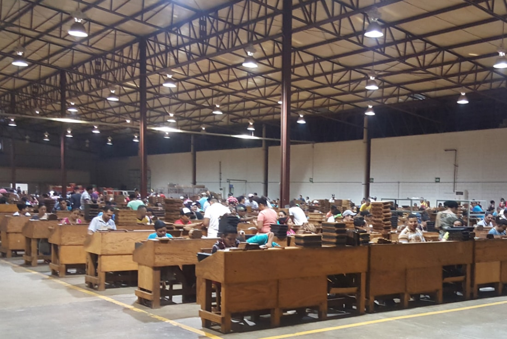
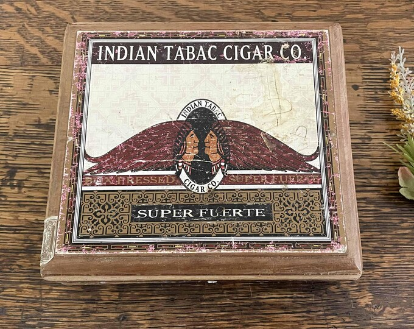
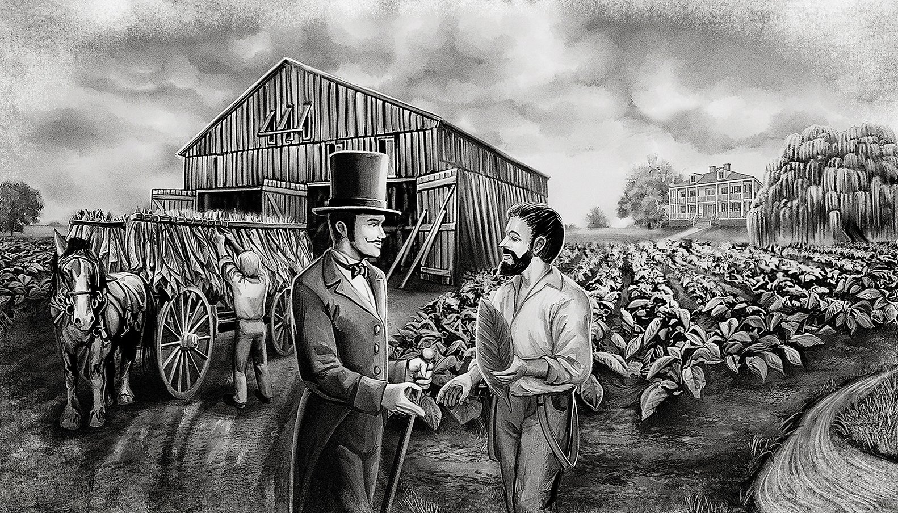

特集 — フィル・ザンギ3世
インディアン・タバックには、もう一人の創業者がいました。商標を持ち込み、葉巻を「発明」し、ホンジュラスの現場を作った男、フィル・ザンギ3世。彼は長く表舞台から遠ざかっていましたが、2026年11月25日、回想録『One Long Day』を出版し、自らの半生を語り始めました。本特集（第2部）は、その回想録を主軸に、会社側の物語では見えなかった創業期のもう一つの姿を描きます。第1部「ロッキー・パテル」編 と対になる一篇です。

商標の少年時代、父の横領と会社の崩壊、1996年の提携、プラセンシアとの出会い、国境の夜、2000年の事故と決裂、そしてブラントラップの誕生と、名前の帰還。語られるのは敗者の恨み節ではなく、「もう一つの事業」を育て続けた男の記録です。もっとも、これは一方の当事者の語りです。その留保は、最後まで外しません。
本特集は、フィル・ザンギ3世の回想録『One Long Day』（2026年11月25日、Kaplowitz Media との共同出版）を主軸資料として使います。ただし回想録は ザンギ側の一方当事者の証言 です。相手方（ロッキー・パテル側）の言い分は確認できていません。特に事故と決裂の経緯、および故人・関係者に関わる記述については、事実として断定せず、「ザンギはこう回想している」という形でのみ紹介します。公的な記録（特許、SEC 提出資料など）で裏付けが取れた事柄は、補足として明示しました。規模や金額の数字は著者の記憶によるものが多く、その旨を添えています。資料によって揺れのある年・数値は、検証欄に記録しました。
◆ 一、商標の少年 ― インディアン・モーターサイクルと「ニック」
第1部で見た会社の物語は、1995年の創業から始まっていました。しかしザンギの物語は、もっと前、オートバイの商標から始まります。ここからは回想録の時間です。
ここからは回想録の時間です。『One Long Day』の語り手 フィル・ザンギ3世 にとって、インディアン・タバックの起点は葉巻ではなく、オートバイの商標でした。10代の頃、彼はインディアン・モーターサイクルの商標権を競売で勝ち取った「ニック」（本名カルメン・D・デ・レオーネ）から商標の使用を許され、Tシャツなどのアパレルを売る少年実業家として育ちます。後にニックは、ザンギとその父に商標の1%を1ドルで譲りました。
◆ 二、発明 ― UST、レイモンド・ガイ、名刺代わりの1,000箱
葉巻のアイデアは、ベッドに寝転んでインディアンのロゴとその鏡像を眺めていたときに降りてきた、とザンギは書きます。社名は インディアン・タバック（"tobacco" の言葉遊び）、スローガンは「World's Finest」。1991年、彼は大手タバコ会社の UST に電話をかけ、レイモンド・ガイ という人物に巡り合います。ザンギが「タバコの紳士」と呼ぶこのメンターのもとで、ビトラの名付け（ティーピー＝トルペード、ウォリアー＝ロンズデール、ボクサー＝ロブスト、チーフ＝ダブルコロナ、アロー＝スモール）が進み、最初の発注は1,000箱。売るためではなく「名刺代わりに配るため」の1,000箱でした。その箱のデザインは後に賞を受けています。

ここまでの記述は、すべてザンギの回想録に基づく 当事者の証言 です。商標とアパレルから葉巻が生まれたという系譜は、会社側の公式な創業物語には現れないもので、今回の回想録で初めて公に語られました。パテル側がこの経緯をどう語るかは、現時点では確認できていません。
◆ 三、崩壊 ― 父の横領と強制破産
回想録の前半を貫くのは、父 フィリップ・ザンギ（父） の影です。ザンギの語るところでは、父は会社の金を少しずつ横領し、マサチューセッツ州法の仕組みの中で会社は 強制破産（債権者側からの申し立てによる破産） に追い込まれました。一家は1994年にノースカロライナへ移り、1995年には自宅に錠が下ろされ、金庫も会社の口座も空になっていた。父は起訴を受けて逃亡者の立場にあり、大陪審では300人が事情を聞かれたといいます。若いザンギ自身は、米国検察側に弁護される側にいました。
さらに厄介なことに、1992年の商標の延長手続きは、誤って父フィリップ・ザンギ2世の名義で、しかもオートバイ向けとして出願されていました。葉巻のための商標を守るには、破産管財人との交渉から始めなければならなかった。葉巻事業の「発明」と、その土台の崩壊が、同じ数年のうちに起きていたことになります。
◆ 四、ホンジュラスへ ― 1994年、「勝者の輪」
1994年、ザンギはホンジュラスへ渡ります。引退していたレイモンド・ガイが RTDA（当時の業界見本市）の資料を送り、彼はホンジュランのキューバン・タバコズに連絡を取った。空港に迎えに来た工場側の責任者ガブリエル（婚約者は経営一族のクラウディア）は、彼に拳銃を手渡したといいます。ダンリの旧 UST 工場では、ラリー・パロンボからバンド代1,000ドルの請求書を突きつけられ（彼の手元には2,000ドルしか残っていなかった）、「プライベート・ラベルはもう終わりだ」と告げられます。そのときの捨て台詞が「勝者の輪の中で会おう（I'll see you in the winner's circle）」。この言葉は後に、ホルトのロブ・レヴィンにも向けられることになります。葉の調達では、ガブリエルとともに国境を越えてニカラグアへ不法に入り、逮捕され、スポンサー話を持ちかけて切り抜けた――という武勇伝めいた挿話も、回想録は率直に記しています。
◆ 五、1996年、提携 ― 二つの創業物語
では、パテルはいつ登場するのか。回想録の語りでは、きっかけは父でした。グランド・ハバナ・ルーム（会員制シガーラウンジ）の創設メンバーだった父が、店に通う葉巻好きの弁護士を息子に引き合わせた。それがロッキー・パテル。当時は女性弁護士アリシアのもとで働くアソシエイトでした。1996年、パテルはザンギのパートナーになります。パテルの用意した元手（シードマネー）が「本当に自分を前に進めてくれた」と、ザンギは感謝を込めて書いています。二人はヴェニスに同居し、米国とホンジュラスを往復する生活が始まりました。折しも葉巻ブームは頂点に近づき、葉の不足が二人を襲います。
会社側の物語では、インディアン・タバックの創業は1995年、創業者はロッキー・パテルであり、ザンギはホンジュラス側の栽培・製造を担ったパートナーと位置づけられます。第12弾プラセンシア特集でも、その整理で「1995年にインディアン・タバックを創業、当初はザンギがホンジュラスでの栽培・製造を担った」と記しました。一方、回想録の物語では、商標と葉巻の発明はザンギが先行し、パテルは1996年に資金とともに加わった後発のパートナーです。両者は「1995〜96年に二人が組んで事業が本格化した」という骨格では重なりますが、主語が違います。本特集ではどちらか一方に寄せず、会社側の物語と回想録の証言を併記します。創業年についても、資料により1995年／1996年の揺れがあることを明記しておきます。
◆ 六、葉の師たち ― プラセンシア、マルティン、レイエス
回想録が描くもう一つの重要な出会いが、ネストル・プラセンシア（父） です。ダンリのグラナダ・ホンジュラス・ホテルで、ザンギはほぼ毎晩のようにネストル・プラセンシアと夕食をともにしていました。やがて、自分が知らないうちにプラセンシアの葉を買っていたこと（生葉300ポンドと発酵葉100ポンドの物々交換という形で）が判明します。ネストルは「金もなく、ホテル住まいで、銃を持ち歩く」若者の正直さを笑い、翌日工場へ買い物リストを持って来いと言った。リストの総額は小売換算でおよそ3万ドル（約480万円）。「お前のものだ」。ザンギは 3か月以内に全額を返済した と書きます。

この証言は、第12弾プラセンシア特集で紹介した「工場の中の工場」（第八章）の前史にあたります。葉の供給者と若いブランド主のあいだに、まず個人的な信頼の貸し借りがあった。ホンジュラス時代のザンギの「葉の師」は、ブーム期にネストルと働いたキューバ人の老師 ペドロ・マルティン でした。リヘロ／ビソ／セコの見分け、ハマストランとエステリの葉の違い――現場の知識は、こうして受け継がれていきます。一方で、キューバ出身のマスターブレンダー、ロランド・レイエス・シニア（プーロス・インディオス）とは犬猿の仲でした。レイエスは「インディオス」の名を盗まれたと考え、ザンギは「インディアン・モーターサイクルは1901年生まれだ」と反論する。プラセンシアから葉が出ない時期に、レイエスが供給を助けたこともあったといいます。
◆ 七、国境の夜 ― リミテッド・リザーブの起源
回想録の中で、葉巻そのものの転機として語られるのが1998年の収穫です。プエルタ・ネグラの国境の納屋から夜間に運び出された葉は、インディアン・タバック・リミテッド・リザーブ になる運命でした。ザンギは自らこう書きます。「あのタバコの作物は、私のインディアン・タバック・リミテッド・リザーブになるはずだった。私の高評価の作品群の夜明けだ」（回想録 Loc 472）。安売りの名刺代わりだった葉巻が、「評価される葉巻」へ舵を切る起点として、著者自身がこの収穫を位置づけているのです。
この時期のパテルの会社は、やがて CA（Cigar Aficionado）の高評価を量産するブランドへ育っていきます。その「高評価路線」の夜明けを、共同創業者は自分の畑仕事の記憶として主張している――この構図を覚えておいてください。第1部で見る「評価の割れ」の物語は、実はここから始まっています。
◆ 八、2000年の事故と「目覚め」 ― 決裂の証言
そして、決裂の章です。回想録の章題は「HONDURAS 2000」。誕生日（6月12日）の数日後、ガブリエルの亡父の形見であるルガー・スーパー・ブラックホーク.44マグナムを手入れしていたザンギは、落下した銃の暴発で右脚を撃ち抜かれます。骨は約1インチ失われ、テグシガルパでの骨移植を含む複数の手術。入院は8日間、費用は総額5万ドル（約800万円）、保険はありませんでした。婚約者（後の妻）は毎晩付き添い、朝5時のバスで2時間かけて教壇に立った。彼女と結婚する決意を、彼はこの病室で固めたと書きます。一方、実の母（看護師）は電話に出てくれなかった。
ザンギの筆が最も痛切になるのは、パートナーへの記述です。彼によれば、パテル（本文では "RP"）は「銃で遊ぶからだ（that's what you get for playing with guns）」と言って距離を置いた。かつてパテルが入院したとき、その病床に付き添ったのは自分だったのに――。ザンギはこの出来事を「目覚め（awakening）」と呼びます（回想録 Loc 493〜515）。そして「家族だと感じた人々」として、最初にネストル・プラセンシアの名を挙げ、発酵担当のルイス・マティアス・モンテス、ガブリエル、クラウディア、ナンシー、工場の働き手たちを数えました。
事故と決裂の経緯は、ザンギの回想録だけに基づく 一方当事者の証言 で、パテル側の言い分は確認できていません。本特集は、この証言を「ザンギはこう回想している」という形でのみ紹介し、事実として断定しません。あわせて時系列の緊張も記録します。第12弾プラセンシア特集（会社・業界側の資料に基づく）では「1999年、パテルはザンギと袂を分かち、製造を自ら引き継いだ」と整理しました。しかし回想録では、2000年の事故の時点でもパテルはパートナーとして描かれ、ザンギがインディアン・タバックを離れるのは2002年まで、となっています。また回想録自体も、章題は「2000」年でありながら本文では「1990年代後半」と書く揺れを含みます。分離の正確な年と経緯は、現時点では確定できません。両説を併記し、断定を避けるのが本特集の立場です。
◆ 九、ブラントラップスの物語 ― 帝国の現場で生まれた「金のなる木」
決裂の物語の陰で、もう一つの事業の種がまかれていました。のちに ブラント・ラップ USA となる製品は、決裂よりずっと前、インディアン・タバックの工場の現場で生まれていたのです。
実はブラント・ラップの起源は、決裂よりずっと前、インディアン・タバックの工場の現場にあります。回想録の「ブラントラップスの物語」の章（Loc 1006〜1028付近）によれば、葉巻ブーム真っ盛りの1996年後半、ザンギの名付け親である「大佐」が、ビーチサンダルにカーゴショーツ姿の金髪の男を工場のオフィスに連れてきました。それがダニー・シンクレア。彼の計画は、ダッチ・マスターズやフィリーズ・ブランツの「皮」（ラッパー紙）だけを製造し、単体で売ることでした。吸い手が「他の用途」のためにガソリンスタンドの葉巻を切り開く手間をなくす、という発想です。似た着想をゲイブに持ちかけていたザンギは意気投合し、開発を手伝って、やがて世にブラントラップスとして知られる製品を生み出しました。フレーバー付けの方法を考案したのも自分だ、とザンギは書きます。
ここに、第六章で見たプラセンシアとの関係が、もう一つの顔を見せます。ダニーとゲイブは「ネストル・プラセンシアと商売をすべきか」をザンギに相談していたのです。ザンギの助言は、まず順番を説くものでした。「まずあの製法の特許を取れ。取らなければ馬鹿だろう。それが他のすべてを養い、種をまく『金のなる木』になる」。やがてザンギは HCT を離れてネストルのもとへ移りますが、ブラントラップスの開発を見届けるため、ほぼ毎日工場にも顔を出し続けたといいます。「インディア（＝インディアン・タバック）は崩れかけていた。だが私には他に育てているものがあった」――帝国の創業と決裂の陰で、もう一つの事業の種が、同じ工場の現場でまかれていたことになります。この章の記述も、ザンギ側の証言としてお読みください。
なお、「まず特許を取れ」という助言が空念仏でなかったことは、公的な記録でも確かめられます。米国特許の記録では、中間ラッパー（インターミディエイト・ラッパー）と呼ばれる技術の後続特許群に、シンクレアと並んでザンギが共同発明者として名を連ねています（登録特許 US7690386号、US7900638号、US8291919号、US8616220号など。いずれもブラント・ラップ USA 帰属）。2010年には、ザンギから同社への特許権益の譲渡も記録されています。工場の現場でまかれた種は、特許という形でも実を結んでいたことになります。
最後に、もう一人の創業者のその後を追います。回想録によれば、ザンギは2002年までにインディアン・タバックを離れ、ダニー・シンクレアの ブラント・ラップ USA に加わりました。ルイジアナで流通を担うダニーのもとで、相棒のエースとともに全米の市場調査に回る日々。その後もルイジアナとホンジュラスの往復は続き、ホンジュラスの工場を閉じてドミニカ共和国へ移転する再編（2004年）にも関わったと回想録は記します。ダニーは後にブラントラップ・レコーズという音楽事業まで始めています。
会社側の公表では、ブラント・ラップ USA の歩みは「1997年から」とされています（ターニング・ポイント・ブランズが2020年に SEC へ提出した発表資料の会社紹介）。回想録の語る1996年後半の現場開発とは、起点の置き方に1年の開きがあり、本特集では両説を併記します。ドミニカ移転の年にも資料の揺れがあります。回想録は「ドミニカ共和国 2004」の章立てでザンギの現地派遣を語る一方、ザンギは2020年のインタビュー（Tobacco Business）で、2005年にシンクレアの誘いでエミリオ・レイエスとドミニカ共和国を訪れたと語っています（別の訪問の可能性があり、切り分けは今後の課題です）。また2020年6月、ターニング・ポイント・ブランズは Durfort Holdings とブラント・ラップ USA から、HTLラップ／コーンの知的財産の共同所有権や、オリジナル・ブラント・ラップの米国における独占販売権など、一定の資産と販売権を総額4,600万ドル（約73億円）で取得しました。これは会社全体の買収ではなく、Durfort 側が製造パートナーとして残る形の取引です（SEC 提出資料による）。
◆ 十、名前の帰還 ― デボネアと、インディアンの名
プレミアム市場への復帰を図った際には、インディアン・タバックのロゴをパテル側から取り戻そうとして「駄目だった」とも書いています（この経緯もザンギ側の証言です）。転機は2012年、パートナーのダニーが香港出張で目にした「Debonaire」の名でした。即座に葉巻の区分（第34類）で商標を登録し、2013年に デボネア を立ち上げます。

そして「奪還」の章です。インディアンの名は2013年、ポラリスに買収されました。2014年、ライセンス担当のトニー・"トイマン" が、125年の葉巻作りの家系を持つクリス・トッパーに「インディアン・モーターサイクルのプレミアム葉巻を作れる者はいないか」と尋ね、トッパーはザンギの名を挙げた。ポラリス／インディアン側は、父の件を含むザンギの全履歴を知ったうえで言ったといいます。「すべての道は君に通じている。前へ進もう」。会社そのものではなく、名前が作り手のもとへ帰ってきた――回想録の掉尾は、この再会に置かれています。そして2026年11月25日、その半生は『One Long Day』として出版されました。

◆ 結び ― 二つの物語が交わる場所
1996年、ホンジュラスの工場で、二人の男が組みました。一人は商標と現場を持ち、一人は資金と交渉力を持ってきた。30年後、一方は3,000万本の帝国の主として法廷に立ち、もう一方は名前の帰還を果たして、自らの半生を一冊に閉じました。同じ30年は、二つの物語としてしか語れない――それが、回想録がこの特集にもたらした結論です。
そして、解けない謎も残りました。ブラントラップを工場へ持ち込んだ、ザンギの名付け親「大佐」とは誰なのか。回想録は名を明かさず、外部の資料にも手がかりはありません。本特集では、大佐は謎のまま置いておきます。回想録は「第一部（first installment）」と銘打たれています。続編があるとすれば、その中で明かされるのかもしれません。
第1部「ロッキー・パテル」編 とあわせてお読みください。二つの物語は、エル・パライソの巻き場で再び交わります。